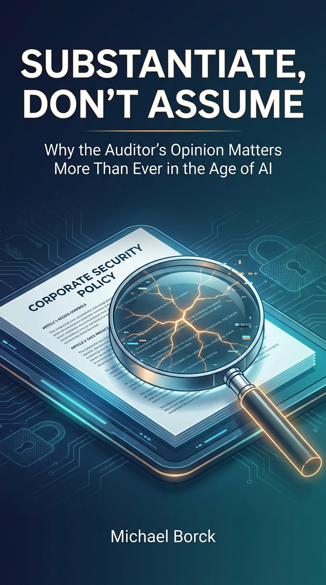

Substantiate, Don’t Assume
Why the Auditor’s Opinion Matters More Than Ever in the Age of AI
Introduction: The Audit Mindset

Every organisation claims its information is secure. The auditor’s job is to find out whether that claim survives contact with evidence.
The polished policy and the unpatched server
Visit almost any company’s website and you will find a security page. It is calm, confident, and covered in badges. “ISO 27001 certified.” “SOC 2 Type II.” “Enterprise-grade encryption.” “Your data is safe with us.” The page reads as a promise. Read it as an auditor and it reads as an assertion: a claim that has not yet met its evidence.
Tessera has one of those pages. It is a fast-growing Perth B2B software company, runs on AWS, serves customers across the region, and is chasing ISO/IEC 27001 certification. Its security page is impressive. Somewhere behind that page is a server that has not been patched in eleven months, an offboarding step that never runs, and a shared admin account four people know the password to. Or maybe not. That is the point: you do not know yet, and neither does Tessera’s board.
This book is about closing the gap between the claim and the evidence. It teaches the discipline that does it: substantiate, don’t assume.
What information security auditing actually is
Information security auditing is not penetration testing and it is not security monitoring, though it borrows from both. A penetration tester breaks in to show that it can be done. Monitoring watches systems continuously and alerts on trouble. An auditor does something different and, to many people, less glamorous: an auditor asks an organisation to prove that the controls it claims to rely on are actually present, actually working, and actually producing the evidence that says so.
The product of an audit is not a list of vulnerabilities. It is an opinion: a defensible, evidenced judgement about whether an organisation’s information security arrangements do what they say they do. That opinion is the thing stakeholders cannot get any other way. A vendor will always say it is secure. A standard will always say what secure should look like. Only an independent auditor says whether the two match, here, now, against the evidence.
The founding maxim of the profession captures this in three words.
Trust, but verify
“Trust, but verify” is older than information security; it is the operating principle of any assurance function, from financial audit to nuclear inspections. It does not mean “be suspicious of everyone.” It means: take a claim seriously enough to test it. Trust is the starting point, because without some trust there is no engagement at all. Verification is the work, because trust that is never tested is just hope.
The auditor’s relationship to the organisation is therefore productive, not adversarial. You are not the security police, and the best auditors are not internal affairs. You are a guest the organisation has invited to find the gaps it suspects but cannot see. That only works as a relationship: open, transparent, and built on trust that runs both ways. Staff who fear you will hand you the polished version. Staff who trust you will show you the real one.
Good auditors behave accordingly long before fieldwork begins. They meet first, run a quick paper assessment so they arrive informed, share the schedule ahead of time, and stay flexible enough to reassess as the picture changes. The engagement is a collaboration with a deadline, not a raid.
To do this credibly you must be willing to find that the polished policy does not match the operational reality, and to say so, clearly, with evidence. That willingness has a name.
A snapshot, not a guarantee
An audit opinion is a judgement about a moment. You gather evidence across a window of days or weeks, and you report what that evidence showed. The environment does not freeze while you write. Controls drift, staff turn over, configurations change, and a system that was compliant on Thursday can be breached on Friday. Your opinion does not guarantee the future. It guarantees that, at the time you looked, on the evidence you gathered, the claim held (or did not).
This is why a defensible opinion has to be more than correct. It has to be fair, repeatable, and ethical, and it has to be documented well enough to serve as evidence itself, sometimes years later, in a board meeting, a regulator’s inquiry, or a court. Another auditor following your working papers should be able to reach the same conclusion. A stakeholder reading them should be able to see how you got there.
Which is also why pressure is the auditor’s real test. A client facing a deal deadline, a certification cutoff, or an embarrassed executive will want you to sign off on “compliant” before the evidence is in. The professional answer to that pressure is the same as the answer to every other shortcut in this book: substantiate, don’t assume. An opinion given under pressure, without evidence, is not an efficiency. It is a liability you have stamped your name on.
Substantiate, don’t assume
Substantiate, don’t assume is the spine of this book and the habit it tries to build. Every control claim is an assertion until evidence supports it. A policy on the intranet is an assertion. A dashboard showing green checks is an assertion. A manager’s assurance that “we do that” is an assertion. None of them is evidence until you have seen it work, on terms you set, in a form you can defend.
This sounds obvious. In practice it is hard. The most dangerous control is the one that looks perfect on paper, because it lowers your guard. Tessera is written to be plausible: impressive in its marketing, rougher underneath, exactly like the real organisations you will audit. Good auditing does not assume the worst. It does something more disciplined: it substantiates what is actually there, names what is missing, and lets the evidence set the opinion.
By the end of this book you will have done exactly that, one week at a time, against Tessera.
The auditor’s moat in the age of AI
Here is the harder question this book takes seriously: what is a human auditor actually for when a machine can draft the work?
The answer is not “the same thing, faster.” The answer reshapes the job. The book takes a deliberately pragmatic stance on AI, steering clear of both alarmism and hype, and lands it on the auditor’s desk. Four moves make the argument.
The technical craft is being commoditised
Listing ISO/IEC 27001:2022’s 93 controls. Mapping them to NIST CSF 2.0. Drafting a test procedure for access reviews. Writing up a finding in the standard format. This is the technical craft of auditing, and it is exactly the kind of work generative AI is rapidly commoditising. An AI can enumerate the controls faster and more completely than any junior auditor. If the only thing an auditor does is produce that list, the auditor has no edge. Every organisation’s auditor can now produce the same list.
Variation is the moat
If an AI is equally good at running every company, then by definition there is no variation between companies that use it generically, and no variation means no competitive edge. The edge comes from variation: human agency, individual judgement, a genuine point of view about what matters. For an auditor, that variation shows up as professional scepticism: the willingness to look at a polished policy and ask whether the evidence supports it, to decide which of a hundred small gaps actually matters, to form a defensible opinion rather than a confident average. The machine produces the draft. The auditor supplies the judgement. That judgement is the moat.
From drafter to evaluator
As AI moves from chatbots to agentic systems that can run procedures on their own, the auditor’s job shifts: from creator of the “shitty first draft” to expert evaluator and editor of AI-generated work. You will read AI-drafted risk assessments, AI-drafted control mappings, AI-drafted findings, and your value will be in spotting where they are generic, where they confabulated compliance, and where the nuance they smoothed over was the whole point. This book makes that discipline explicit and teaches it. The course’s assessments already embody it: you are required to document where you disagreed with or expanded on an AI’s analysis.
Augmentation, not automation
The stance is proactive. Use these tools for augmentation and personalised learning, not passive automation that quietly atrophies the critical thinking the profession depends on. Efficiency is never the goal; defensible judgement is. If you use AI to skip the thinking, you have done the work wrong, no matter how good the output looks. The companion book, Conversation, Not Delegation, teaches the craft of working with AI well; this book teaches what you must verify once the drafting is done.
The AI you use is a third party. Do not paste Tessera’s evidence, configurations, logs, or customer data into a consumer AI tool. That is a disclosure you cannot take back, and it may breach the engagement’s confidentiality clauses and the Privacy Act. Use the approved or enterprise tooling your firm provides, or a locally hosted model. Treat every prompt as if it could become someone else’s training data, because it might. The same scepticism you apply to Tessera’s AI applies to your own: the tool is a thinking partner, not a safe drop box for client secrets.
This premise is the thread that runs through every chapter.
Who this book is for
This is the core text for ISYS6018: Information Security Audit and Control at Curtin University, and it is written for the student taking that unit: someone learning to audit against international standards for the first time. You do not need to be an auditor already. You need to be willing to form opinions and defend them with evidence.
It is also for any practitioner, new or experienced, who wants a readable, opinionated spine for the discipline of information security auditing, and a clear stance on where the human auditor fits once the machines can draft. If you audit, manage auditors, or rely on audit opinions, the argument here is for you.
How this book works
The book is one engagement told twelve ways. You audit Tessera, a fast-growing B2B software company built on AWS and chasing ISO/IEC 27001 certification. Each chapter is one topic, a single weekly question from Why? through Risk?, Which?, Scope? and on to Report? and Conclude?. Chapter N = Topic N, delivered in Week N of the course: read the chapter for a topic in the week you live that topic.
The arc has two acts:
| Act | Weeks | What it does | Ends in |
|---|---|---|---|
| I · Engage | 1–6 | Build the case against Tessera with limited access | A preliminary readiness opinion (desk audit) |
| II · Prove | 7–12 | Full access granted, move from suspicion to proof | A defensible certification-readiness opinion |
Act I forms judgement from documents alone. Act II opens with full auditor access (interviews, configurations, logs, incident records) and drives to evidence. The break between the acts is the break between suspicion and proof.
Running through both acts is the Evidence Locker: a cumulative working-paper file you build one artefact at a time. Each chapter ends with an Evidence Locker prompt, the one thing to lock in this week. By the final week the locker is not a study aid; it is the audit.
The companion site
Tessera is not just a name in this book. It is a live, simulated company at tessera.locoensayo.org, part of the LocoEnsayo rehearsal environments. Their tagline is the right one for auditing: rehearse the real world; the cast is AI; the judgement is yours. The site is open all hours, with no password, so you can follow along wherever and whenever you read. By the end of the book you will have audited it.
Two things make Tessera worth auditing, and both are deliberate. Its people are AI characters you can interview, each with their own role, knowledge, and gaps, like the staff of any real company. And its document library is full, not curated. Not every document is evidence. Not every employee knows the answer. Some files are red herrings that look relevant and lead nowhere. Deciding which document to test and which person to ask is an audit skill in its own right, and Tessera gives you room to practise it. A scenario engineered to hand you the obvious evidence teaches you nothing. A messy, realistic one teaches you to find it.
Every chapter’s Tessera Case narrates the worked example; the companion site is where you run your own.
The companion book
Conversation, Not Delegation (https://michael-borck.github.io/conversation-not-delegation/) is the companion on method. Where this book teaches the audit discipline (the what we verify), that book teaches how to work with the machine well: the conversation loop, staying in the loop, compensating for AI’s predictable weaknesses. The two are complementary. Every chapter here assumes you are using AI, and assumes you are using it the way that book describes: as a thinking partner, not a delegate.
Conventions used in this book
Every chapter carries the same set of recurring features so you learn to recognise them. Each is rendered differently.
Blue boxes show AI used as a thinking partner for the chapter’s task: a worked example against Tessera, including, crucially, where the AI got it wrong and how the auditor corrected it. This is the book version of the course’s weekly AI Field Notes task.
Red boxes apply the chapter’s concept to AI itself: which controls an AI deployment falls under, how you audit an AI-assisted control, what evidence an AI system produces. These appear where the topic demands.
Green boxes are the weekly prompt: the one artefact to add to your cumulative working-paper file this chapter. By Week 12 the locker is the audit.
🗂️ Tessera Case
Shaded case boxes carry the running Tessera engagement, the concrete artefact each chapter lands on. Tessera is written to be plausible: impressive on paper, rougher underneath. Good auditing does not assume the worst. It substantiates what is there.
You will also see standard callouts for emphasis: Watch out (yellow) for traps that look right but are not, plus occasional Key idea and Try this boxes.
How this book was written
This book was written using the methodology its companion describes. AI tools were used as thinking partners at every stage: drafting, stress-testing, and being corrected. The relationship between author and AI in producing this book is exactly what the book argues the auditor’s relationship to AI-generated work should be. The machine produces the draft; the author supplies the judgement, the evidence, and the defensible opinion. Every sentence reflects the author’s judgement. The AI made the work faster. It did not do the thinking.
A note on where this book is at
This is an open-access book in active development. The Introduction and Chapter 1 are the vertical slice: they exist to prove the voice and the recurring-feature format before the remaining eleven chapters are drafted. The online edition is always the most current. The standards targeted (ISO/IEC 27001:2022 and NIST CSF 2.0) are fixed from the outset; where standards drift, the book handles it by edition, not errata.